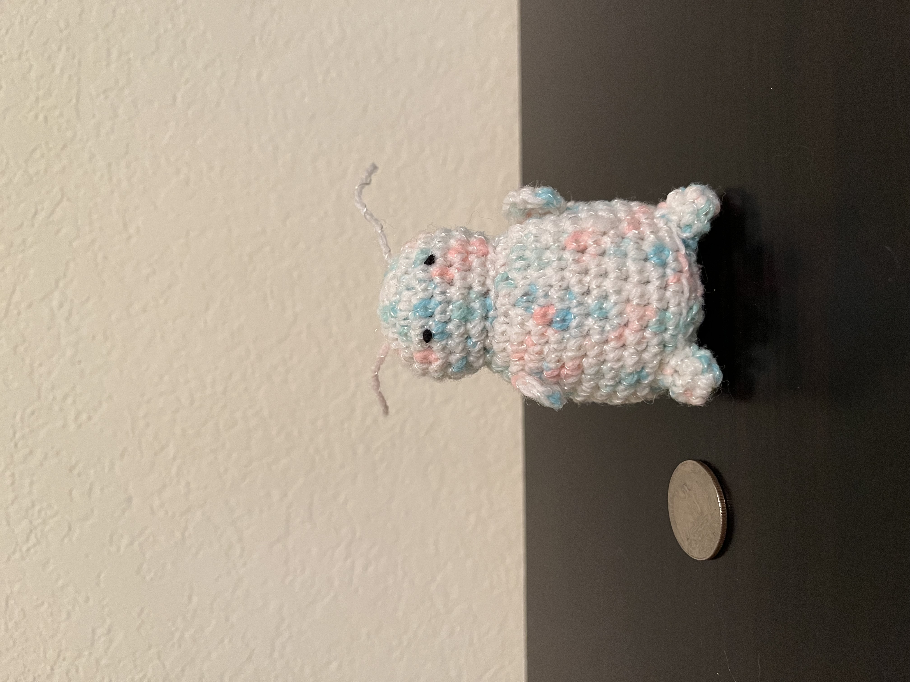
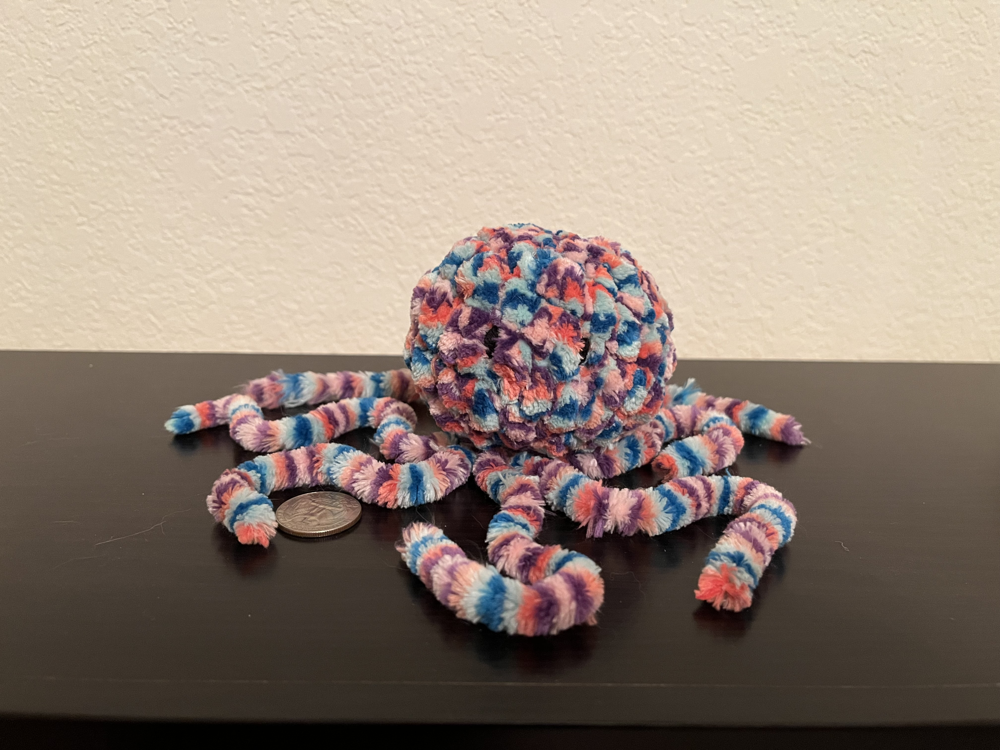
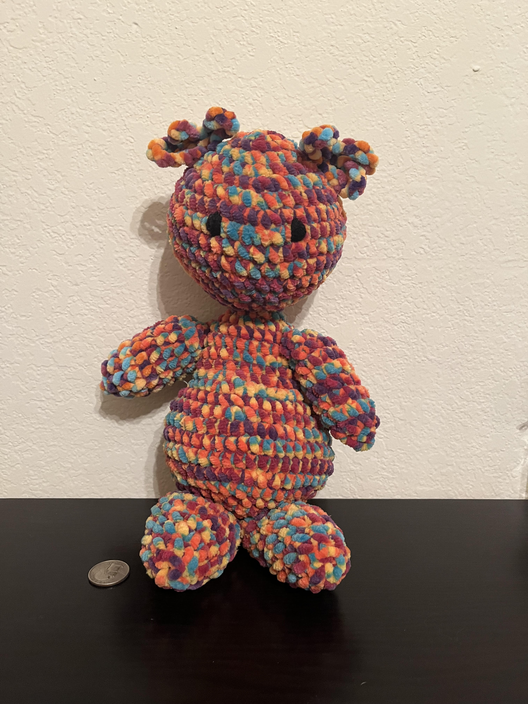

My Creations
Free Hand
I have free handed two projects before. A quarter is placed beside them for size reference.
 With Help
There are a few creations that started from a pattern but strayed from it by the end. Usually because I lost track of my rows and decided to wing it.
The pattern I started with was from Edwards' Crochet Imaginarium by Kerry Lord. The book has a single pattern for the body but the head, arms, and feet have 23 patterns each to choose from. I lost count of my rows when doing the body and the limbs. The arms and legs are uneven as a result. The head is probably the only thing that is consistent with the book pattern.